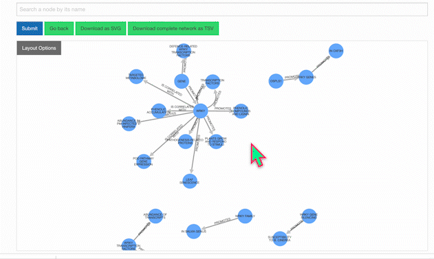
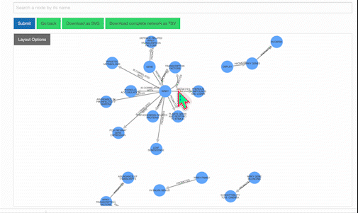
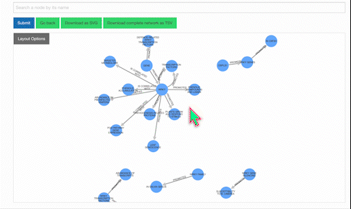
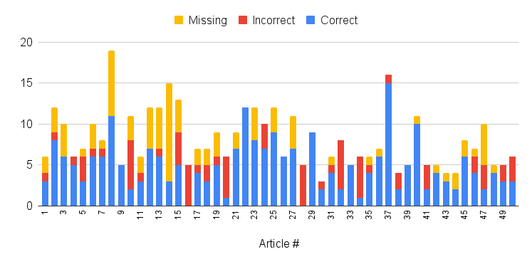
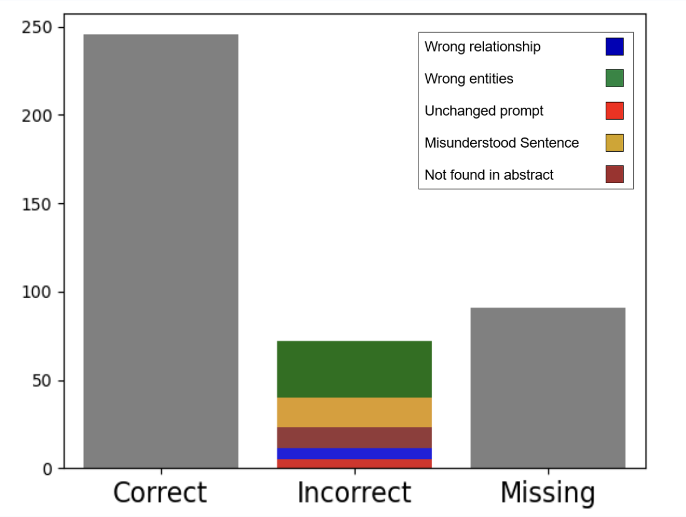

Help / FAQs
General Questions & Answers
-
How was the database constructed?
We used GPT to evaluate research abstracts and identify pairs of entities (e.g., genes, proteins, molecules, compartments, complexes) in addition to their unique interaction type (e.g., enhances, binds, affects, represses).
For instance, after examining the abstract"The cohesin complex plays an important role in sister chromatin cohesion. Cohesin's core is composed of two structural maintenance of chromosome (SMC) proteins, called Smc1 and Smc3. SMC proteins are built from a globular hinge domain, a rod-shaped domain composed of long anti-parallel coiled-coil (CC), and a second globular adenosine triphosphatase domain called the head. The functions of both head and hinge domains have been studied extensively, yet the function of the CC region remains elusive. We identified a mutation in the CC of smc3 (L217P) that disrupts the function of the protein. Cells carrying the smc3-L217P allele have a strong cohesion defect and complexes containing smc3-L217P are not loaded onto the chromosomes. However, the mutation does not affect inter-protein interactions in either the core complex or with the Scc2 loader. We show by molecular dynamics and biochemistry that wild-type Smc3 can adopt distinct conformations, and that adenosine triphosphate (ATP) induces the conformational change. The L217P mutation restricts the ability of the mutated protein to switch between the conformations. We suggest that the function of the CC is to transfer ATP binding/hydrolysis signals between the head and the hinge domains. The results provide a new insight into the mechanism of cohesin activity."
GPT returned the following statements:- Smc1: !interacts with! Smc3
- Smc3: !binds to! Scc2
- Smc3: !switches between! conformations
- ATP: !induces! conformational change
- L217P mutation: !restricts! ability to switch
-
How can I search the database?
Because 3D GenomeConnectome is built from processed abstracts, gene identifiers such as "HGNC: 11111 NCBI Gene: 8243 Ensembl: ENSG00000072501" may not be interpretable by GPT. Instead, search with gene symbols (e.g., SMC1), as these are used in the literature.
You can also choose to search for terms mentioned in the abstracts (for instance, "cohesin", "chromatin", etc.), author names, or PubMed IDs. -
Which papers were analyzed?
To ensure 3D GenomeConnectome reflects state-of-the-art knowledge, all research papers from which it derives were published after 2008. Articles related to chromatin interactions and 3D genome organization were downloaded for the analysis.
 }})
-
How do I use the KnowledgeNetwork viewer?
Our KnowledgeNetwork viewer displays a plethora of relationships found between your search query and GPT-detected entities. Should you want to narrow your search options, click on the "Layout Options" button:

Then, select your edges of interest and click "Recalculate Layout":

To learn more about a specific node, click on it:

Users also have the option of personally modifying networks. For example, among the list of possible actions when clicking a node is removing it. Clicking once on the background will restore node opacity, while clicking twice will reincorporate the removed node.

To isolate a neighborhood of entities, select your node of interest and click "Isolate Neighborhood." Double-clicking on the background will restore the full, original network.  -
How can I access the research abstracts from which relationships were identified?
Below the KnowledgeNetwork viewer is a table showcasing the network's nodes and edges. Clicking on the Pubmed ID will display both the research abstract and entities identified from it:
 }})
-
How accurate is GPT in extracting information from the literature?
As with any AI model, GPT is not 100% accurate, generating results that may be erroneous or incomplete. Accordingly, relationships of interest warrant confirmation with the appropriate abstract. To estimate the accuracy rate, we sampled and manually inspected 50 articles, the results of which are summarized by the following 3 charts:
Distribution of correct, incorrect, and missing statements detected by GPT.
Total number of correct, incorrect, and missing statements extracted from the 50 articles.